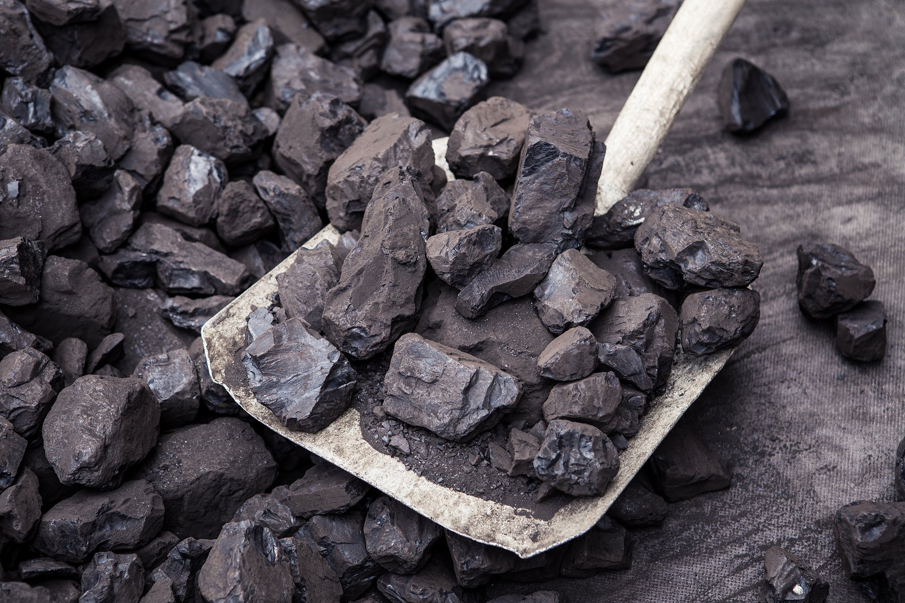
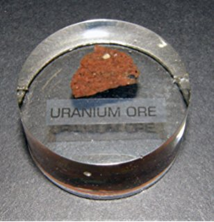

CORRECT!
Burning 1 kg of uranium in a power plant can generate about 950 Megawatt of power per day. As of January 1, 2016, the US Energy Information Administration (EIA) estimated that the amount of recoverable coal reserves in the US is about 255 billion tons.
At the present energy consumption rate, the present coal reserves in the US might not last beyond a maximum of 30 years. Whereas the uranium reserves of about 1,227 million pounds (as in 2008) are enough to last for over 500 years.
The Nuke Quiz #2
Question 2
To produce 950 Megawatt of power per day, about 2,750 tons of coal is required. How much of Uranium do you think is required to produce the same amount of power?

